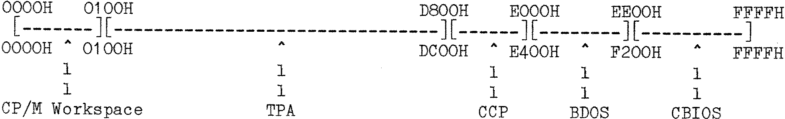

80-Bus News |
January–February 1983 · Volume 2 · Issue 1 |
| Page 26 of 56 |
|---|
| 1) | I have included “signon” messages and also a ‘Putvid’ type of screen printing routine. These are copied to RAM at 09000H and ‘Jumped to’ by the COLD BOOT LOADER after CPMSYS64 has been loaded. If I need routines like “cinit” or UART initialization, they can be placed in this area of memory as well. After printing the ‘signon’ messages the routine jumps to BIOS to start CP/M. Any CP/M that contains OLDBIOS, and does not have a modified COLD BOOT will skip these messages but will display its’ own messages. |
| 2) | I have modified the ‘TAB’ routine so that 16 locations are displayed on a line, in HEX and ASCII. The HEX is displayed in columns of four bytes. This mod. is really more useful with the IVC card display as there is a lot of ‘wrap around’ on the Nascom 48 wide screen, but it can be used. |
| 3) | I have also added a few extra bytes so that I can now ‘Dump’ the ‘TAB’ output to my IMP Printer. |
| 4) | The ‘SIMON’ signon messages have been increased to show that a modified SIMON is in use. A list of Command keys is also displayed as a reminder of the commands available in SIMON. |
It may be necessary in the future to add a ‘cinit’ routine, and it would also be possible to include any special initialization routines for UARTS etc. By reducing the very extensive ‘signon’ messages, or using an even larger ROM (!) there is scope for almost any addition, such as direct Memory dump to cassette/disk, and so on.
N.B. If the initialization routines in middle memory make any calls to CP/M to print messages, or to clear characters as “cinit” does, then since CP/M has at that stage NOT been started, it will be necessary to initialize the ‘ BDOS jump ’ and IOBYTE in low memory BEFORE making any calls to BDOS otherwise the system will ‘die’.
I hope that this article has been of some help to others who, like me want to learn more about some of the less well documented features and operations of CP/M systems. ( I must apologise however, to the Authors of the various Programs for the liberties that I, an amateur ‘hacker’, have taken with their software, and hope that this will be accepted in the cause of ‘Learning’.)
NOTE :- My method of Booting NASSYS and CP/M from EPROM CARD is described in 80BUS NEWS No 1. (N.B. There is an error in the diagram on page 45 of that article. The wiper of S1A goes to pin 2 of LKS1, not to pin 3.)
–––––––––––––*****–––––––––––––
Above the line, addresses refer to CP/M from MOVMODV
Below the line, addresses refer to CP/M from MOVOLD
| Page 26 of 56 |
|---|